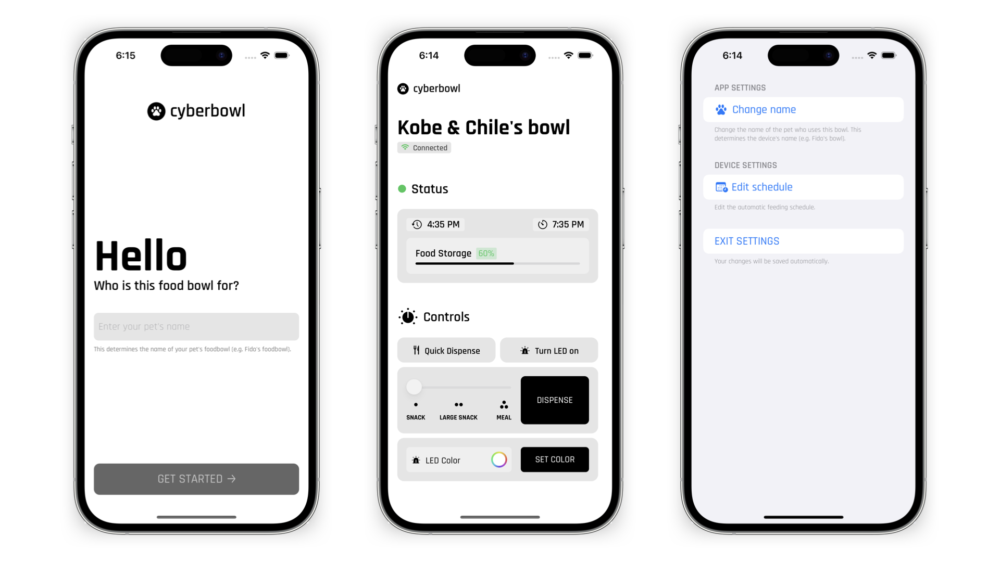

A smart pet food bowl powered by a Raspberry Pi running Linux! The
device is designed to automatically dispense a pre-determined amount
of food at regular intervals throughout the day, eliminating worries
of overeating and ensuring each meal is fresh and tasty. The companion
iOS app enables on-demand snacks or meals, schedule customization, and
remote monitoring.
Components
Raspberry Pi Zero W
128x32 monochrome OLED (2)
Adafruit TCA9548A I2C Multiplexer
NEMA17 short body stepper motor
A4988 stepper motor driver
Load sensor
Power supply for both motor and RPi
Overview
Originally, this project was meant to be a simple retrofit of my dogs'
(Kobe and Chile) current gravity-powered food bowl. Once I got started,
however, I quickly got carried away adding features. Owing to that, my
first foray into hardware has been an incredibly rewarding learning
experience!
As of now, the electronics are complete. The iOS
app is fully-functional and nearly complete, once I've implemented
the auto feeding and food storage monitoring systems in the device's
firmware, I'll be able to make those features functional in the app.
The backend code (server.py) is working but still needs some work to be
up to standard.
If you have any questions or suggestions
regarding this project, send me an email!
Software

iOS App
You can check out all the code for the iOS app over on
GitHub.
The companion app for the newly-named cyberbowl is nearly finished!
All features are complete, with the exception of schedule editing and
food storage monitoring. Those features aren't complete on the backend,
so I need to implement there first.
The app is written entirely in
Swift / SwiftUI with no external dependencies. Communication with the
device is handled over Wi-Fi: the app connects via local network and
communicates with a RESTful API written in Python running on the Pi.
Though not required to use the food bowl, the app enables on-demand
feeding, remote monitoring, and rich customization.
Firmware
The firmware is also available on
GitHub. The README provides a more detailed discussion of the
firmware's modules. In summary, each module is responsible for
controlling a single hardware component. The server module is the most
recently added, and is the backbone of the iOS companion app. The
server is pretty basic, it utilizes socket networking to receive requests
and send data back to the iOS app. As of now, the server API has
endpoints which allow: a "quick dispense," a "full" dispense of as much
food as is desired, turning the status LED on/off, setting the
status LED color, and testing the connection.
Electronics
As I said, this is my first-ever project involving hardware. I am using
this project as an opportunity to learn as much as I can. At this point,
I feel pretty comfortable working with new components and figuring
things out as I go, so it's going pretty well!
Early display tests
These videos show some early tests with animations on the device's OLEDs.
Design
The design is still up in the air, but is next on the to-do list. The
design is meant to be modular so that each piece is small enough to fit
on my printer's bed and print in a reasonable amount of time.
The
photos below show possible designs for the lid assembly and feeder
extrusion (which you can see printed above).
Lid Assembly
The lid assembly has a channel built into it to allow cable management
for the human-facing display.
Feeder Extrusion Assembly
Here, cable management is again designed into the parts surrounding the
display.
Work in Progress
This project is a work in progress! As such, this page will be updated
somewhat often and things about the project might change. Also, any
questions, tips, or suggestions are welcome. Feel free to send me an
email at my iCloud address (on my about page).